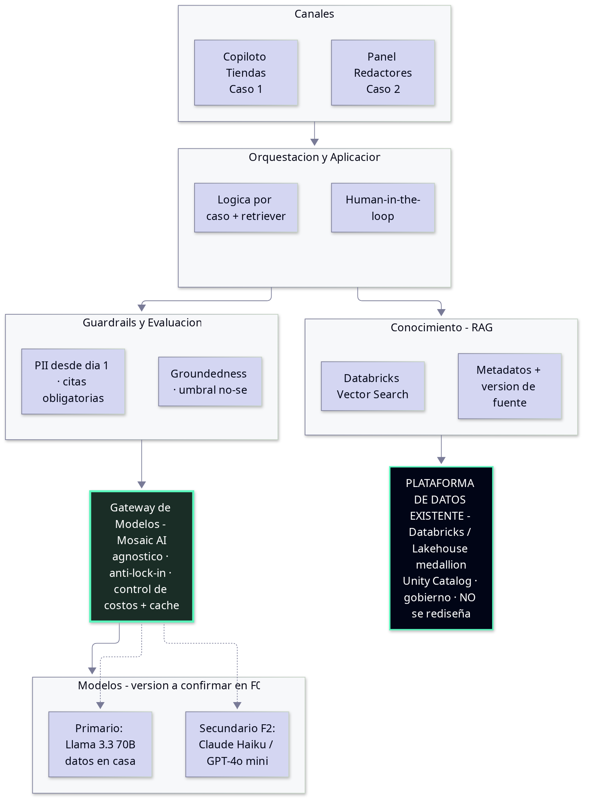
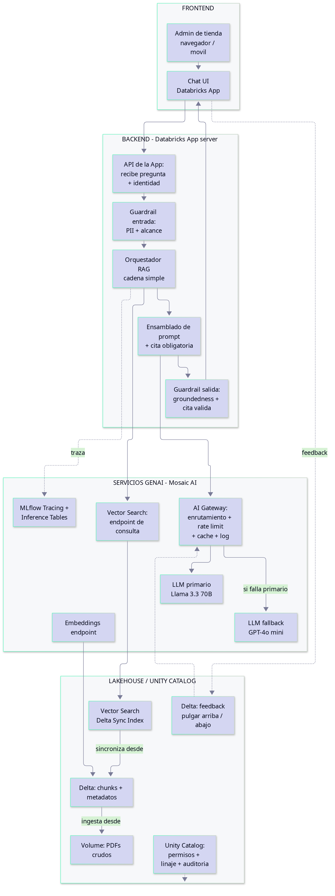
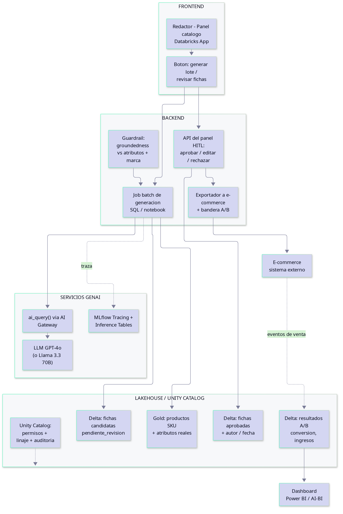
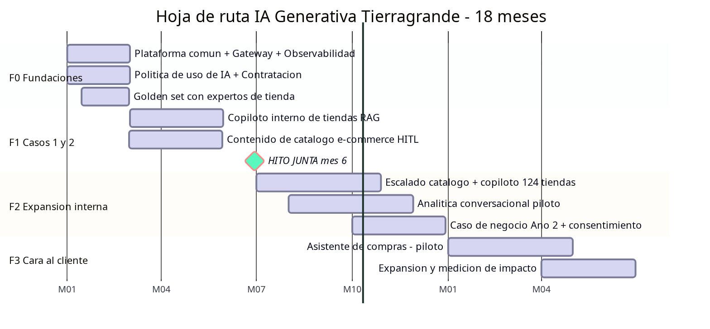

Pedimos al comité aprobar el Año 1 — USD 200.000, todo incluido, para 2 casos internos de bajo riesgo — y el camino al asistente de compras en Año 2, con un hito tangible para la junta en 6 meses.
“El competidor ya lanzó su asistente de compras y nosotros seguimos en comités. En seis meses quiero algo que la junta y los clientes puedan tocar.”
| Decisión | Qué proponemos | A quién responde |
|---|---|---|
| Casos Año 1 | 1) Copiloto interno de tiendas · 2) Contenido de catálogo e-commerce | CEO (valor visible) · CDO (bajo riesgo) |
| Asistente de compras (cliente) | “Todavía no” — se habilita en Año 2 sobre los rieles ya construidos | CEO (plan creíble) · CDO (sin riesgo prematuro) |
| Arquitectura | Plataforma común agnóstica de modelo, con gateway / abstracción | CTO (anti-lock-in, costos) |
| Build vs. Buy | Buy lo comoditizado · Build solo la lógica propia | CTO (capacidad) · CEO (velocidad) |
| Gobierno | Política de uso de IA + evaluación trazable desde el día 1 | CDO (auditable) · CTO (shadow AI) |



“No voy a permitir que un chatbot que alucina precios destruya la plataforma. Todo lo que salga de un modelo tiene que ser evaluable, trazable y auditable.”

1. Aprobar USD 200.000 para los 2 casos internos (Copiloto de tiendas + Catálogo e-commerce).
2. Avalar el plan al asistente de compras en Año 2, condicionado al hito de 6 meses.
3. Próximo paso inmediato: arrancar F0 — plataforma común, política de uso de IA y golden set.
| # | Supuesto (base · a validar en F0) |
|---|---|
| S1 | 15–25% de las 60k PQR por desconocimiento de tienda |
| S2 | Costo de gestionar una PQR ~USD 4–6 |
| S3 | Costo laboral cargado ~USD 8/hora |
| S4 | ~40% del catálogo (≈11.000 SKUs) con fichas pobres |
| S5 | Uplift de conversión +1% a +3% (conservador) |
| S6 | Ventas e-commerce ~USD 65M/año, +30% anual |
| S7 | Adopción: tiendas y redactores dispuestos a usar IA |
| # | Supuesto (base · a validar en F0) |
|---|---|
| S8 | ROI estimado, no medido: el real se mide en F1–F2 |
| S9 | RAG viable: la documentación existe (dispersa en PDFs) |
| S10 | Créditos de nube cubren cómputo/almacenamiento base |
| S11 | Calidad del dato no es el cuello de botella |
| S12 | Volumen de modelos moderado dentro del presupuesto |
| S13 | Es posible contratar el perfil senior en el rango |
| S14 | Llama 3.3 70B disponible y suficiente en español |